NASIL BÜYÜYORUZ
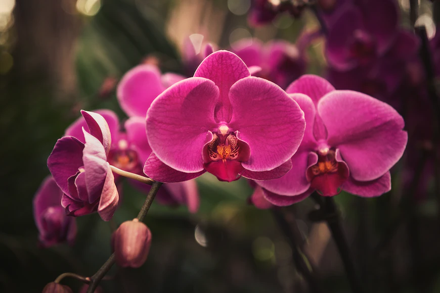
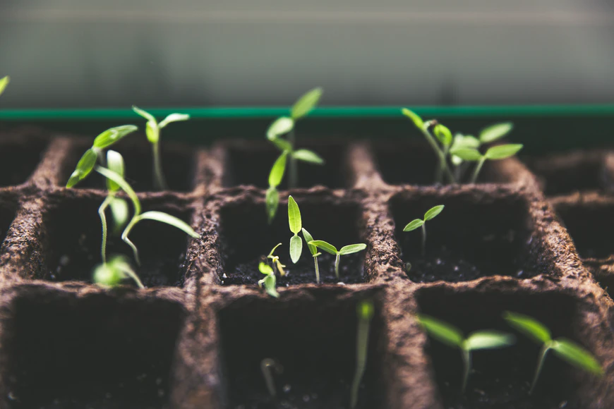
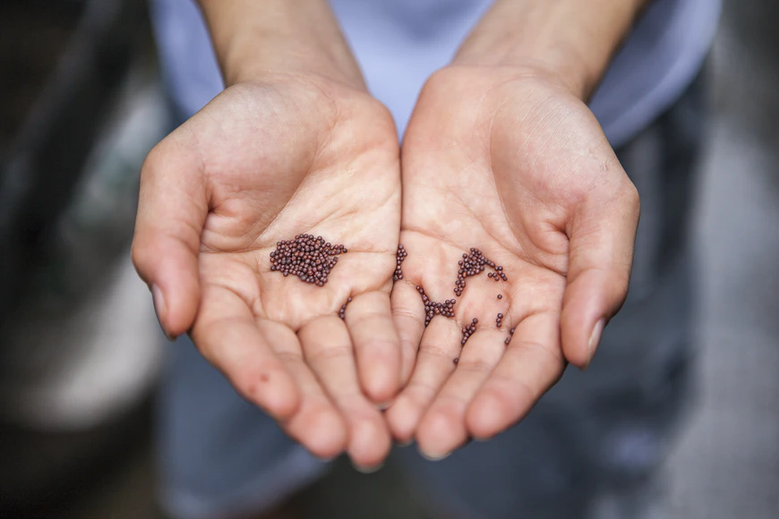
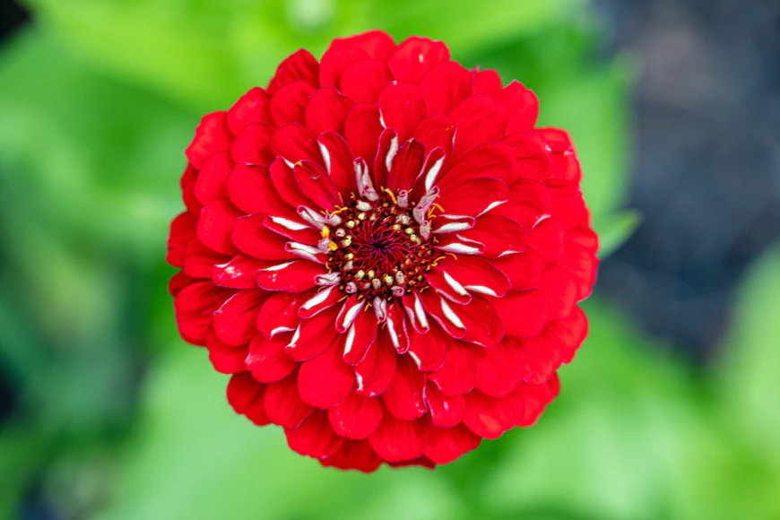
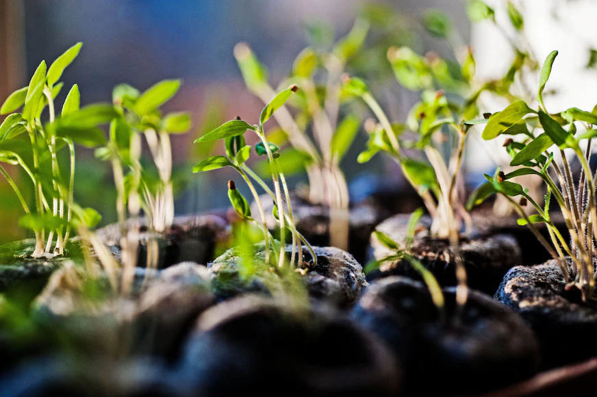
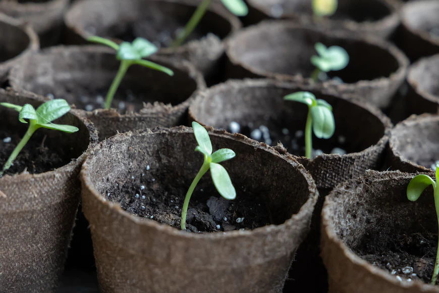
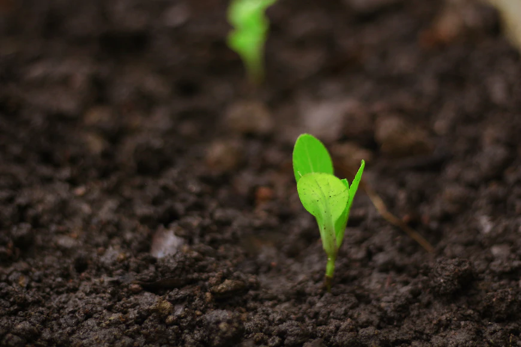
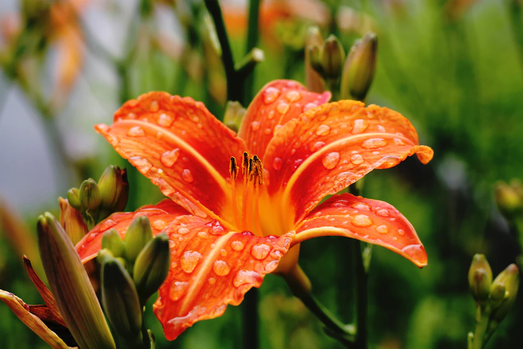
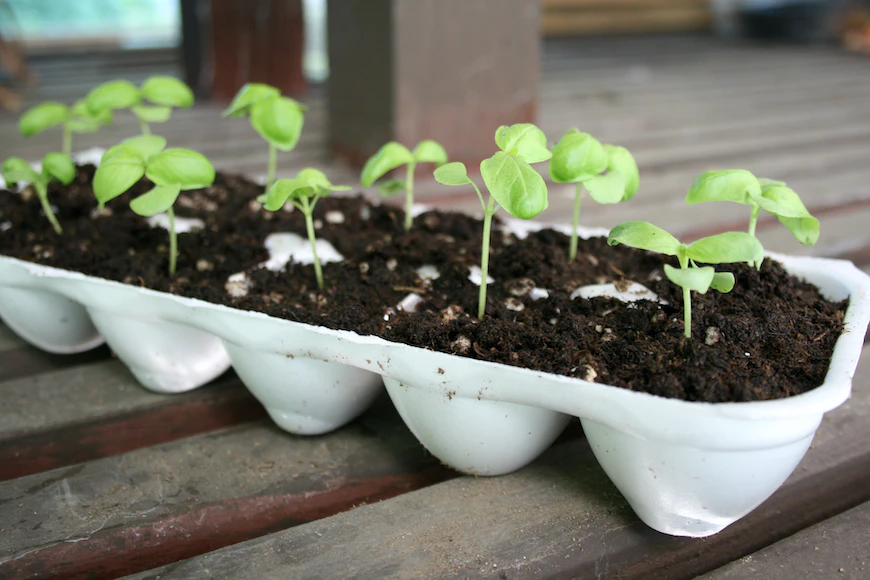
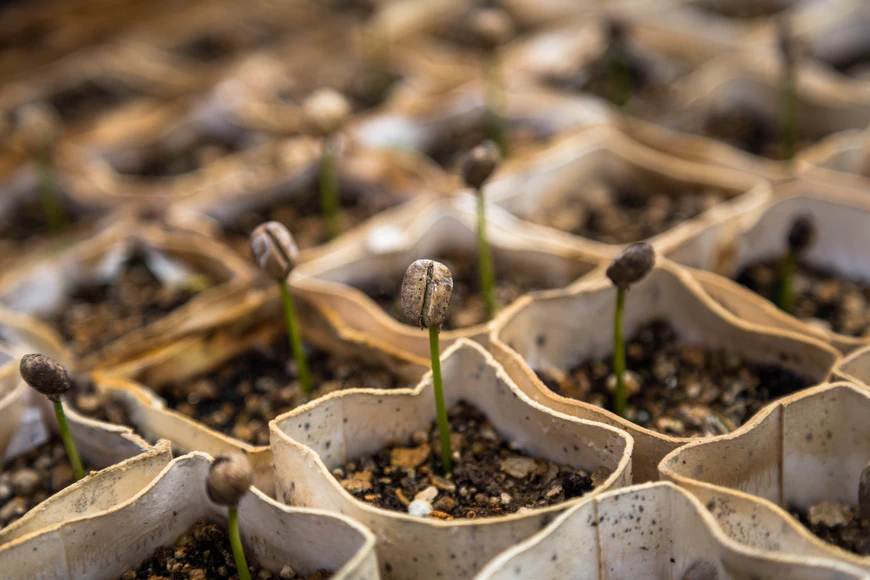
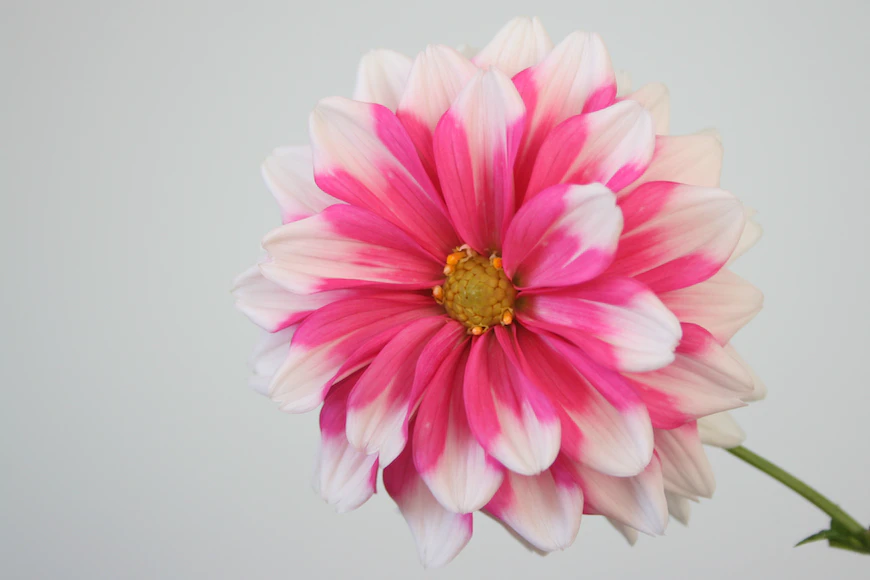
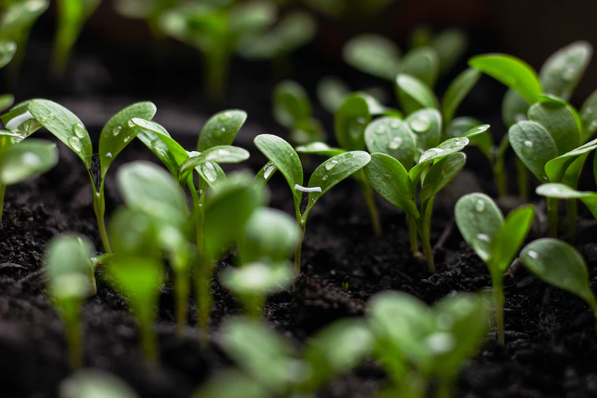
NE DİYORUZ
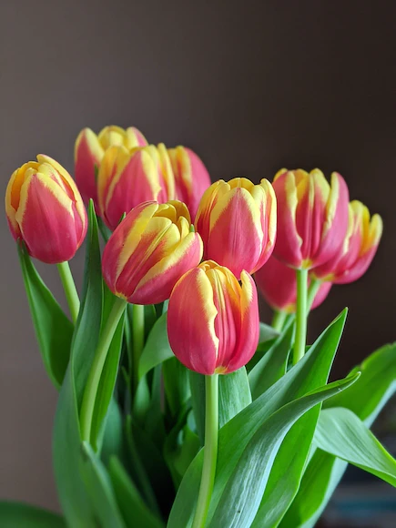
KIŞIN KARLAR ÇOK YAĞARSA BAHARDA LALELER BOY ATAR, PARLAK RENKLER TAŞIRLARMIŞ
LALE
Zambak familyasından gelen ve rengarenk çiçekleri olan çok hoş bir bitkidir. Soğanların üzerinde zarlı bir örtü vardır. Ayrıca 2 - 8 yapraklı, yeşil ve etlidir. Her lale renginin bir anlamı vardır. Lale bitkisi yılda bir çiçek açar
- | ÜÇ GÜN ÖNCE |
- 16
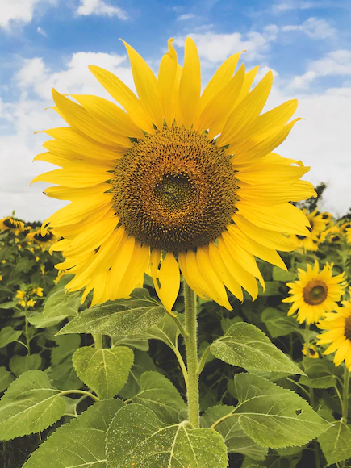
AYÇİÇEĞİ MİSALİ HEP GÜNEŞE ÇEVİRECEKSİN YÜZÜNÜ
AYÇİÇEĞİ
Ayçiçeğinin Latince adı "Helianthus Annuus" dur. 1-2 metre boyunda sert ve dik gövdeli, yaz aylarında sarı, yassı, koni şeklinde çiçekler açan bir bitkidir. Genelde ılıman iklimleri sever, soğuk iklimlerde gelişimi yavaşlar.Çapı yaklaşık 15 cm'dir
- İKİ GÜN ÖNCE|
- 10
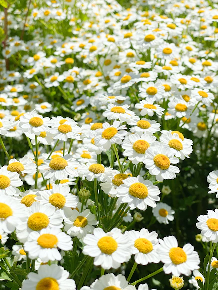
AŞK, PAPATYA YAPRAKLARINI TOPLAMAKLA DEĞİL, SEVMEK İÇİN BİR YOL YAPARAK ÖĞRENİLİR
PAPATYA
Kırsal kesimin en güzel süsü olarak görülen papatyalar, aynı zamanda baharın da habercisi olarak kabul ediliyor. Birçok farklı rengiyle dikkat çeken papatyalar genellikle beyaz olarak görülür
- ALTI GÜN ÖNCE|
- 35
NASIL YAKLAŞIYORUZ

KAKTÜS YAKLAŞIMI
Çöl koşullarında bile rahatlıkla yaşayabilen kaktüs bitkisi, sukulent bitki ailesinden gelmektedir. Kaktüs; Hem Kuzey hem de Güney Amerika'da, Kuzey Kanada'da ve hatta Afrika kıtasında yetişir. Çok büyük kaktüsler olduğu gibi küçük kaktüsler de vardır. Kaktüs su kaybını önlemek için kalın derilidir.
Kaktüs kuraklığa dayanıklı bir bitkidir ve fazla sulama kaktüsün çürümesine neden olur. Toprağındaki mineraller tükeneceği için toprağının iki yılda bir değiştirilmesi gerekir. Direkt güneş ışığını sever
Kaktüsü ilkbahar ve yaz aylarında günde iki kez sulayabilirsiniz. İç mekan kaktüsünüzü ayda bir sulamak yeterlidir. Kaktüsü tabanından sulamalısınız. Kaktüslere su püskürtmemelisiniz çünkü onlar çöl bitkileridir, neme alışık değildirler

GÜL YAKLAŞIMI
Gül ailesinden güzel görünümlü bir bitkidir. Birçok gülün anavatanı Asya'dır. Ancak çok gösterişli bir bitki olduğu için hemen hemen tüm dünyada yetiştirilmektedir. Ülkemizde yaklaşık 25 çeşit gül bulunmaktadır. Genellikle kışın yapraklarını döken ve uzun yıllar yaşayan çalı türü bitkilerin adına gül denir
Ülkemizde Isparta gül yetiştiriciliği açısından önemli bir bölgedir. Türkiye'de gül yetiştiriciliğinin çoğu burada yapılır. Tarım alanında önemli bir dış ticaret ürünüdür. Burada yetişen güllerden şurup, sirke ve reçel yapılır. Damıtma yoluyla elde edilen gül yağı parfümlerde, sabunlarda ve kremlerde kullanılır
Çiçeklerine göre; tek katlı güller, yarı katlı güller ve katlı güller.
Boylarına göre; Cüce, sarmaşık ve uzun güllerdir.
Çiçeklenme zamanlarına göre; Yılda bir kez açan güller, yılda bir kereden fazla açan güllerdir.
Renklerine göre; güller beyaz, kırmızı, pembe, sarı, mavi, siyah ve somon renktedir
TÜRLER

İETİŞİMDE OLMAK
| NO 13,D:2-K44 10034 Avcılar/İstanbul-Turkey | |||||||
| +90 555 - 444 - 333 - 222 - 111 | |||||||